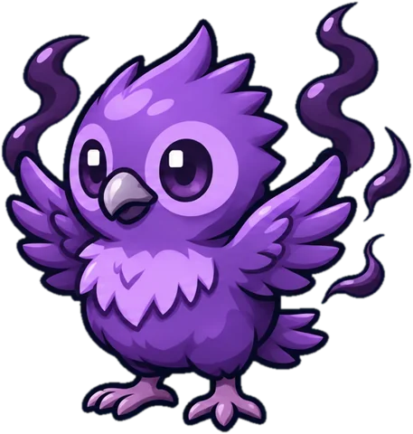

 Wind
WindTap a stage to read its story.
Malvox is a round purple-black fledgling bird with large bright eyes and stiff little wings that are too young to carry it far. Wisps of dark energy curl around it like steam. It hops at the base of Gale Ridge's lower rock faces, catching falling debris and inspecting each piece with an expression of concentrated judgment. When the Ridge's storms rise, Malvox does not shelter - it climbs higher, spreads its unready wings, and simply tilts into the wind, learning the feel of it. Guardians say it was born already aiming upward.
Field note: Malvox has been observed leaping from heights its wings cannot yet support - and slowing its fall enough to land safely every time, seemingly through will alone.
Storm Spire. Malvox and its family are found in the Storm Spire. See everyone who lives there.
Share a Bond Food that matches its types to become friends. Malvox loves:
A Bond Food is not a trick. It joins your spirit with the Kimuro's spirit, and only when it chooses you.
Print the Kimuro adventure packs: mazes, cards, a board game and Bond Mark medals.
See the printable packs